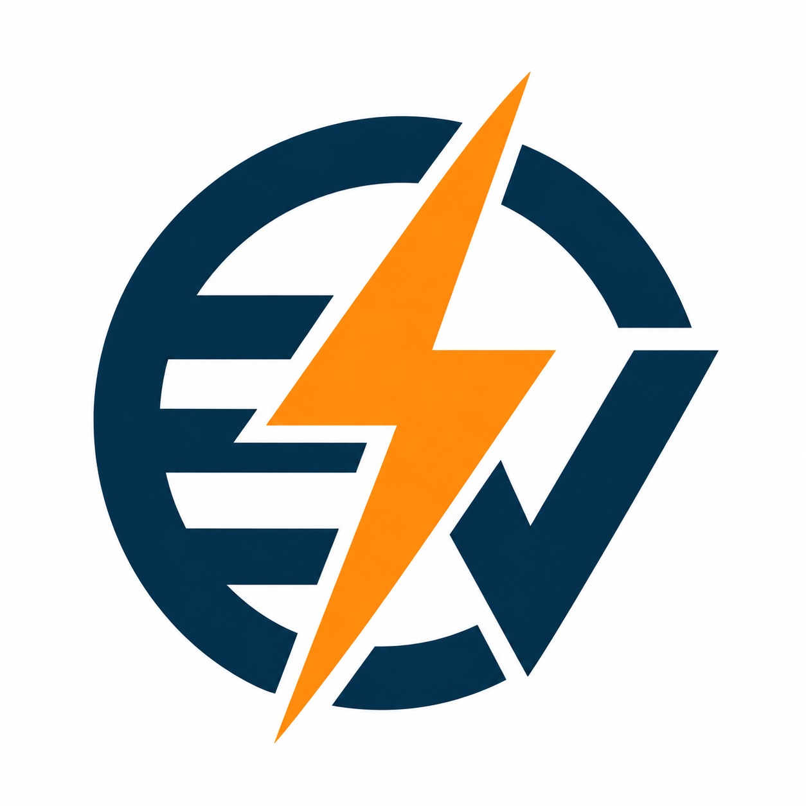

Instalaciones eléctricas
Instalación y adecuación de circuitos, tomacorrientes y puntos eléctricos según las necesidades del espacio.

E & VSOLUCIONES INTEGRALESCotiza tu proyectoDesde una nueva instalación hasta una falla que necesita atención. Revisamos las necesidades eléctricas de tu hogar, comercio o negocio para definir una solución adecuada.
Consultar este servicioInstalación y adecuación de circuitos, tomacorrientes y puntos eléctricos según las necesidades del espacio.
Revisión de interrupciones, conexiones y componentes para identificar el origen de una falla y definir su reparación.
Evaluación e instalación de tableros y sus componentes, considerando las cargas y la distribución de los circuitos.
Instalación y renovación de puntos de luz para interiores y exteriores según el uso de cada área.
Evaluación de soluciones de protección compatibles con los equipos y las condiciones de la instalación.
Si estás remodelando, ampliando tu negocio o necesitas revisar una falla, podemos evaluar tu instalación y conversar sobre el trabajo necesario.
Sí. El diagnóstico permite definir el alcance del trabajo. Escríbenos para coordinar la evaluación y consultar sus condiciones.
Los materiales y la mano de obra se definen en cada cotización. Confirmaremos contigo los componentes necesarios antes de coordinar el trabajo.
Atendemos consultas para hogares, comercios y negocios. Comparte la ubicación y los detalles para confirmar la atención de tu proyecto.